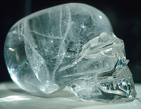

Mixtec crystal skull at Ethographic
Section of the British Museum, London. According to Dr. Michael Smith,
this sculpture was recently shown to be a modern forgery.
Photo copyright Ruben G. Mendoza,
1976.
Michael E. Smith, Professor
Department of Anthropology, SS-263
University at Albany, SUNY
1400 Washington Ave
Albany, NY 12222
Home Page: http://www.albany.edu/~mesmith/
Berdan, Frances F., Richard E. Blanton, Elizabeth H. Boone, Mary G. Hodge, Michael E. Smith, and Emily Umberger. 1996. Aztec Imperial Strategies. Washington, DC: Dumbarton Oaks.
León-Portilla, Miguel. 1963. Aztec Thought and Culture: A Study of the Ancient Náhuatl Mind. Norman: University of Oklahoma Press.
León-Portilla, Miguel. 1969. Pre-Columbian Literatures of Mexico. Norman: University of Oklahoma Press.
Nicholson, H. B. and Eloise Quiñones Keber. 1983. Art of Aztec Mexico: Treasures of Tenochtitlan. Washington, DC: National Gallery of Art.
Miller, Mary Ellen. 1986. The Art of Mesoamerica from Olmec to Aztec. London: Thames and Hudson, Ltd. ISBN: 0-500-20303-6.
Nicholson, H. B. and Eloise Quiñones Keber (Eds.). 1994. Mixteca-Puebla: Discoveries and Research in Mesoamerican Art and Archaeology. Culver City, CA: Labyrinthos.
Pasztory, Esther. 1983. Aztec Art. Norman: University of Oklahoma Press. ISBN: 0-8061-2536-5.
Smith, Michael E. and Cynthia M. Heath-Smith. 1980. Waves of Influence in Postclassic Mesoamerica? A Critique of the Mixteca-Puebla Concept. Anthropology 4:15-50.
Umberger, Emily. 1987. Antiques, Revivals, and References to the Past in Aztec Art. RES: Anthropology and Aesthetics 13:62-105.
Umberger, Emily and Cecilia Klein. 1993. Aztec Art and Imperial Expansion. In Latin American Horizons, Edited by Don S. Rice, Pp. 295-336. Washington, DC: Dumbarton Oaks.
Umberger, Emily. 1996. Art and Imperial Strategy in Tenochtitlan. In Aztec Imperial Strategies, Edited by Frances F. Berdan, et al., Pp. 85-106. Washington, DC: Dumbarton Oaks.
Umberger, Emily. 1996. Aztec Presence and Material Remains in the Outer Provinces. In Aztec Imperial Strategies, Edited by Frances F. Berdan, et al., Pp. 151-180. Washington, DC: Dumbarton Oaks.
Boone, Elizabeth H. (Ed.). 1987. The Aztec Templo Mayor. Washington, DC: Dumbarton Oaks.
Boone, Elizabeth H. 1996. The Aztec World. Washington, DC: Smithsonian Institution Press.
Brundage, Burr C. 1985. The Jade Steps: A Ritual Life of the Aztecs. Salt Lake City: University of Utah Press.
Carrasco, David. 1999. City of Sacrifice: The Aztec Empire and the Role of Violence in Civilization. Boston, Massachusetts: Beacon Press. ISBN: 0-8070-4643-4.
Clendinnan, Inga. 1991. Aztecs: An Interpretation. New York: Cambridge University Press.
Davies, Nigel. 1973. The Aztecs: A History. Norman: University of Oklahoma.
Davies, Nigel. 1987. The Aztec Empire: The Toltec Resurgence. Norman: University of Oklahoma Press.
Gibson, Charles. 1964. The Aztecs Under Spanish Rule: A History of the Indians of the Valley of Mexico, 1519-1810. Stanford, CA: Stanford University Press.
Hassig, Ross. 1988. Aztec Warfare: Imperial Expansion and Political Control. Norman: University of Oklahoma Press.
Hodge, Mary G. and Michael E. Smith (Eds.). 1994. Economies and Polities in the Aztec Realm. Albany, New York: Institute for Mesoamerican Studies.
Kellogg, Susan. 1995. Law and the Transformation of Aztec Culture, 1500-1700. Norman: University of Oklahoma Press.
Lockhart, James. 1992. The Nahuas After the Conquest: A Social and Cultural History of the Indians of Central Mexico, Sixteenth Through Eighteenth Centuries. Stanford, CA: Stanford University Press.
Matos Moctezuma, Eduardo. 1988. The Great Temple of the Aztecs. New York: Thames and Hudson.
Ortiz de Montellano, Bernardo. 1990. Aztec Medicine, Health, and Nutrition. New Brunswick: Rutgers University Press.
Smith, Michael E. 1992. Archaeological Research at Aztec-Period Rural Sites in Morelos, Mexico. Volume 1, Excavations and Architecture / Investigaciones Arqueológicas en Sitios Rurales de la Epoca Azteca en Morelos, Tomo 1, Excavaciones y Arquitectura. University of Pittsburgh Memoirs in Latin American Archaeology 4. Pittsburgh: University of Pittsburgh.
Smith, Michael E. 1997. Life in the Provinces of the Aztec Empire. Scientific American, Pp. 76-83. September 1997.
Smith, Michael E. 1998. The Aztecs. Oxford, UK: Blackwell Publishers. ISBN: 0-631-20958-1.
Soustelle, Jacques. 1961. Daily Life of the Aztecs on the Eve of the Spanish Conquest. Stanford, CA: Stanford University Press.
Taube, Karl. 1993. Aztec and Maya Myths. Austin: University of Texas Press.
Townsend, Richard F. 2000. The Aztecs. London: Thames and Hudson, Ltd. ISBN: 0-500-28132-7.
Cortés, Hernando. 1962. Five Letters of Cortés to the Emperor. Translated by J. Bayard Morris. New York: Norton.
Díaz, Gisele and Alan Rogers. 1993. The Codex Borgia: A Full-Color Restoration of the Ancient Mexican Manuscript. New York: Dover Publications.
Durán, Fray Diego. 1971. Book of the Gods and Rites and The Ancient Calendar. Translated by Fernando Horcasitas and Doris Heyden. Norman: University of Oklahoma Press.
Durán, Fray Diego. 1994. The History of the Indies of New Spain. Translated by Doris Heyden. Norman: University of Oklahoma Press.
Díaz del Castillo, Bernal. 1963. The Conquest of New Spain. Translated by J. M. Cohen. New York: Penguin.
León-Portilla, Miguel. 1962. The Broken Spears: The Aztec Account of the Conquest of Mexico. Boston: Beacon Press.
Sahagún, Fray Bernardino de. 1950-1982. Florentine Codex, General History of the Things of New Spain (12 books). Translated and edited by Arthur J. O. Anderson and Charles E. Dibble. Santa Fe and Salt Lake City: School of American Research and the University of Utah Press.